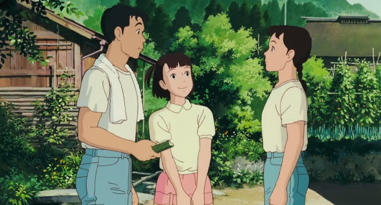
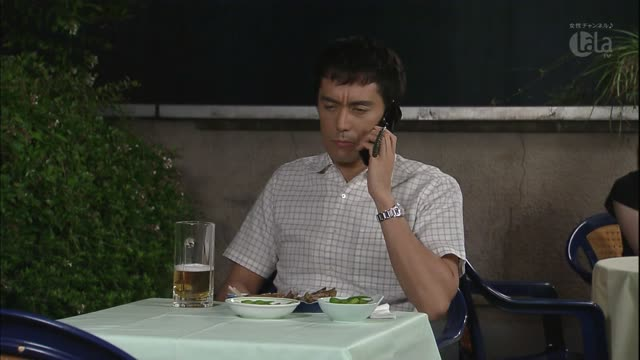
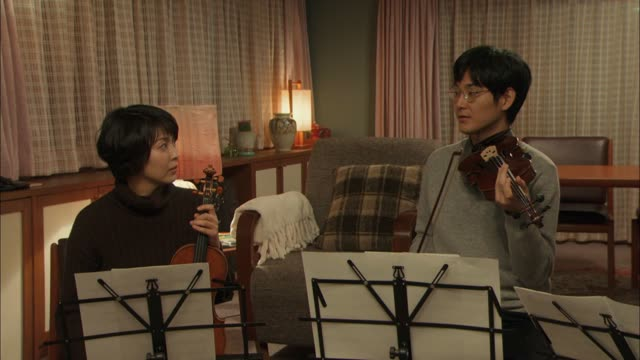
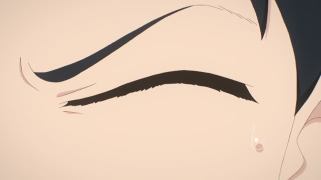

～ませんか
| Polite | ～ませんか |
|---|---|
| Casual | ～ない？ ない form, voice goes up |
Same meaning: "won't you, want to?". Only the politeness changes.
ませんか is how you invite someone: "would you like to...?", "why don't we...?". Swap ます for ませんか: 行きます → 行きませんか.
Literally it's "won't you go?". Asking it the negative way is softer: it's easy for the other person to say no.
Casual: the ない form with a rising voice: 行かない？

Only Yesterday
蔵王にドライブ行きませんか？ 息抜きに。
"Want to go for a drive to Zao? To take a break."
～ませんか is a polite invitation: "won't you...?", "would you like to...?". Take the ます-form and turn ます into ませんか: 行きます → 行きませんか.
On this card, he invites her for a drive. It sounds softer than asking straight out, because it leaves room to say no.
Kekkon Dekinai Otoko · Episode 10
ねえ 休憩しない？
"Hey, want to take a break?"
Casual: the ない-form with a rising question. On this card, する → しない？ = "won't you take a break?".
Quick Examples
Inviting a coworker.
一緒に昼ご飯を食べませんか。
"Would you like to have lunch together?"
食べます → 食べませんか.
PoliteTexting a friend.
週末、映画見ない？
"Want to watch a movie this weekend?"
Casual: the ない form, voice up at the end.
CasualTalking to a neighbor.
今度、うちに来ませんか。
"Why don't you come over sometime?"
PoliteA hot day, walking with a friend.
ちょっと休まない？
"Want to take a break?"
休む → 休まない.
CasualWith and without
映画を見ますか。
"Are you watching a movie?" A plain question, just asking.
映画を見ませんか。
"Would you like to watch a movie?" An invitation, usually with me.
Examples from Media
Quartet · Episode 10
コンサート やりませんか？
"Shall we do a concert?"

Kekkon Dekinai Otoko · Episode 7
こっち来ませんか？
"Won't you come over here?"

I'm Taking the Day Off · Episode 2
ラーメン 食べに行きませんか？
"Want to go get some ramen?"
食べに ("to eat") + 行く ("go") → 行きませんか = "won't you go to eat?". A polite invitation.
Aggretsuko · Season 1, Episode 9
どこか お店でも入って 休みませんか？
"Shall we go into a shop somewhere and rest?"

Quartet · Episode 10
もう始めませんか？
"Why don't we start?"
始める ("start") → 始めませんか = "why don't we start?". もう: "already, now".

Shirokuma Cafe · Episode 43
駅まで一緒にいきませんか。
"Shall we go to the station together?"
An invitation: ませんか is softer than ましょう.

Shirokuma Cafe · Episode 47
ペンギンさん、やめませんか。
"Penguin, why don't we stop?"
Politely asking someone to quit it.

Teasing Master Takagi-san · Season 2, Episode 10
来ない？
"Want to come?"
来る → 来ない？: an invitation.
Further Reading
A Dictionary of Basic Japanese Grammar
Entry "~mashō", Related Expression · p. 243